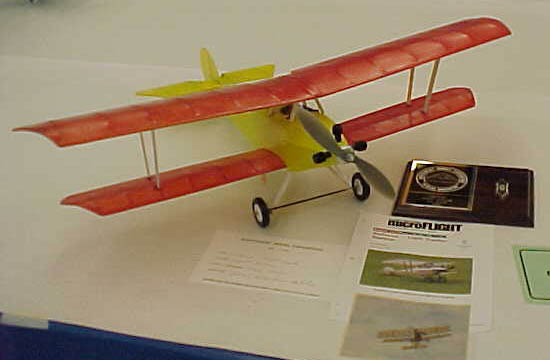

Bellanca Light Tractor by Jerry Gordon


Jerry Gordon of Yakima, WA.
1st in Sport Biplane at the 2002 Northwest Model Exposition.
Photos by Chuck Clemans
Return to
my original version | Other Versions Index
Copyright 2003, Thayer Syme. All rights reserved